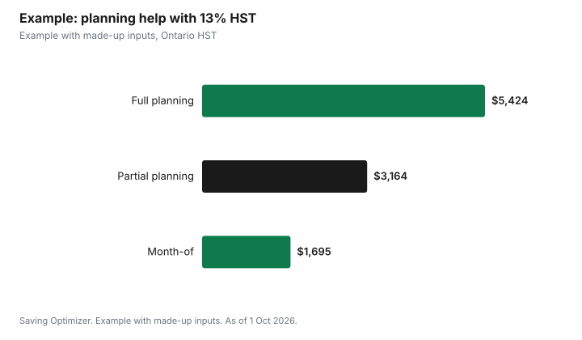

Weddings · Canada
Wedding Planner vs Day-of Coordinator: Cost, Pricing Models and When Each Pays Off
A full-service wedding planner handles everything from budget to the last dance, partial planning covers selected parts, and a day-of (really month-of) coordinator takes over in the final weeks to run the timeline, rehearsal and day itself. In Canada, planners price by flat package, percentage of your budget, or by the hour, and in Ontario a planner who charges HST adds 13%. A venue's own coordinator is not the same thing: they represent the venue and generally do not manage your outside vendors. Choose based on how much time you have, how many outside vendors you are hiring, and how complex the logistics are.
Key takeaways
- Full planning: highest cost, most hours saved, can find vendor savings.
- Partial planning: help where you need it most.
- Day-of coordination: lowest cost; you still plan everything yourself.
- Ask for the pricing model and what triggers extra charges.
- In Ontario, add 13% HST if the planner charges it.
- Example with made-up inputs: three options for a 120-guest wedding.
Full planning vs partial vs day-of
| Task | Full planning | Partial planning | Day-of / month-of |
|---|---|---|---|
| Budget and priorities | Yes | Sometimes | No |
| Vendor search and booking | Yes | Selected vendors | No |
| Contract review and negotiation | Yes | Selected vendors | No |
| Design and decor plan | Yes | Sometimes | No |
| Timeline and floor plan | Yes | Yes | Yes, from your plans |
| Final vendor confirmations | Yes | Yes | Yes |
| Rehearsal | Yes | Yes | Yes |
| Running the day | Yes | Yes | Yes |
Pricing models
- Flat package: one price for a defined scope. Easy to budget; check the number of meetings, hours on the day and assistants included.
- Percentage of budget: the fee rises with your spending. Ask whether the percentage applies to the final or estimated budget and which costs count.
- Hourly: common for consultations or partial help. Ask for a cap, and for a log of hours billed each month so the total never surprises you.
- Extras: travel, overnight stays, additional assistants, extra meetings, destination weddings and late finishes are common add-ons. Get each in writing, along with the payment schedule and what happens to your deposit if either side cancels.
Taxes
The CRA's GST/HST rates list Ontario's HST at 13%. Ask each planner whether they charge GST/HST and whether the quote includes it, and compare quotes on the same basis. Vendor bookings the planner arranges are separate bills, each with its own tax treatment, so do not assume the planner's quote covers them.
What a planner can save you
The main value of a planner is time and fewer costly mistakes, not a guaranteed discount. Possible savings include knowing which vendors fit your budget, spotting contract terms such as minimum spends, service charges and cancellation penalties, avoiding double bookings or gaps in the timeline, and keeping the day running so guests and vendors are not waiting. Some planners receive vendor commissions or discounts; ask whether they do, and whether those are passed on to you. Ontario's Consumer Protection Act page says it is illegal for a business to give you false information about itself or its services, and if a business misrepresents its service you can withdraw from the contract within one year.
Venue coordinators
Some venues include a coordinator or event manager. Their job is to deliver the venue's part: room set-up, food and beverage service, timings for the venue's staff. They may not chase your florist, photographer or DJ, manage your ceremony, or handle family logistics. Ask the venue exactly what their coordinator does on the day and whether they stay through the end. If your venue supplies most services (food, bar, decor, rentals), a venue coordinator plus a detailed timeline may be enough.
If you go with day-of help or none
A day-of coordinator works from your plans, so the quality of those plans matters. Build a master document with every vendor's contact, arrival time, set-up needs and final balance; a minute-by-minute timeline from hair and makeup to the last song; a floor plan; a list of who gives speeches; and a short list of family photo groupings. Send it to every vendor two weeks before and confirm each reply. If a friend is filling the coordinator role, give them the authority to make small decisions so they do not need to find you during the reception, and make sure they are not also a bridesmaid, groomsman or speaker.
Count the hours honestly. Planning tasks such as researching vendors, attending tastings and meetings, reading contracts and tracking payments add up, and couples who both work full time should weigh that against the planner's fee.
Questions to ask
- What exactly is included, and how many hours on the day?
- How many assistants come, and who is my contact on the day?
- How do you charge: flat, percentage or hourly? What triggers extra fees?
- Do you take commissions or discounts from vendors, and are they disclosed?
- When do you start (for day-of: how many weeks before)?
- What is the payment schedule, deposit and cancellation policy?
- Who replaces you if you are ill on the day?
- Do you carry liability insurance, and can the venue be named as additional insured?
Decision guide
| Your situation | Consider |
|---|---|
| Little free time, many outside vendors, large guest list | Full planning |
| You enjoy planning but want help with design or vendors | Partial planning |
| All-inclusive venue, small guest list, you have planned everything | Day-of coordinator or venue coordinator |
| Destination or multi-day wedding | Full planning, or a local planner at the destination |
| Tight budget, very simple day | A trusted friend with a written timeline, plus the venue coordinator |
Example with made-up inputs
These numbers are an example with made-up inputs, apart from Ontario's 13% HST. A Toronto couple plans a 120-guest wedding with a $40,000 budget. Option A, full planning at a made-up 12% of budget: $4,800 plus $624 HST = $5,424. Option B, partial planning at a made-up flat $2,800: $3,164 with HST. Option C, month-of coordination at a made-up $1,500: $1,695 with HST. If full planning helps them avoid a made-up $2,000 in mistakes and finds $1,500 in vendor savings, its net cost falls to $1,924, close to option B. The couple also estimates 150 hours of their own time saved with option A and 70 with option B.
| Option | Fee | With HST |
|---|---|---|
| Full planning (12% of $40,000) | $4,800 | $5,424 |
| Partial planning (flat) | $2,800 | $3,164 |
| Month-of coordination | $1,500 | $1,695 |

Common mistakes
- Assuming a venue coordinator manages outside vendors.
- Hiring a day-of coordinator too late for them to learn your plans.
- Comparing quotes with and without HST.
- Not asking about vendor commissions.
- Leaving the backup plan for illness unanswered.
Related: vendor contracts and deposits and 2027 wedding budget.
Sources
- Canada Revenue Agency, GST/HST rates, canada.ca, as of 1 Oct 2026.
- Government of Ontario, Your rights under the Consumer Protection Act, ontario.ca, as of 1 Oct 2026.
- Planner fees, budgets and hours in the example are made-up inputs.
Frequently asked questions
What is the difference between a wedding planner and a day-of coordinator?
A full planner handles budget, vendors, contracts, design and the day. A day-of or month-of coordinator takes over in the final weeks and runs the timeline, rehearsal and day from your plans.
How do wedding planners charge?
By flat package, percentage of the budget or hourly. Ask which model and what triggers extra fees.
Do wedding planners charge HST in Ontario?
Ontario's HST rate is 13%. Ask each planner whether they charge it and whether quotes include tax.
Is a venue coordinator enough?
It can be if the venue supplies most services. Venue coordinators represent the venue and may not manage outside vendors.
Can I cancel a planner contract in Ontario?
Cooling-off periods do not apply to ordinary service contracts. The contract terms govern, but misrepresentation lets you withdraw within one year.
When should I hire a day-of coordinator?
Early enough for them to learn your plans and contact vendors; ask how many weeks before they start.
Researched and drafted with AI assistance and fact-checked against official Canadian sources. How we create content.
Disclosure: Saving Optimizer may earn a commission if a partner link is added later. No partnership is claimed on this page. Education only.